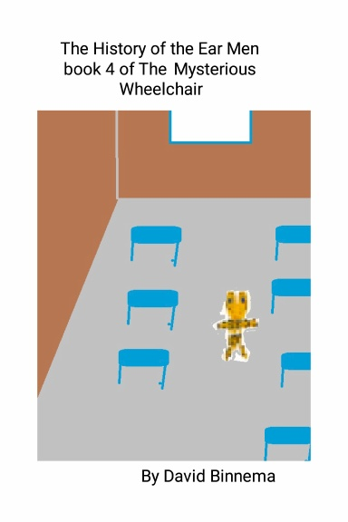

The History of the Ear Men
Book 4 of the mysterious wheelchair
About the Story
Every mystery has a beginning. In this fourth book of The Mysterious Wheelchair series, discover the surprising history of the Ear Men—where they came from, how their magic began, and why their world became so important to Silla‑Tierra. This story reveals the origins of one of the most mysterious groups in the series and shows how their past connects to Catkaty and her family’s adventures.

Table of Contents
- Chapter 1: Catkaty Learns About Silla-Tierra
- Chapter 2:The Monkey Bars Mishap
- Chapter 3: Catkaty Thinks She Is Dreaming When She's Not
- Chapter 4: Catkaty’s Father Has No Idea Where His Daughter Had Vanished To
- Chapter 5: Family Reunion in Silla-Tierra
- Chapter 6: Catkaty’s Grandfather
- Chapter 7: Will Grandfather Trick the Ear Men
- Chapter 8: What to Do When a Family Just Disappeared
- Chapter 9: The Family Leaves Silla-Tierra
©2023 David Binnema — All Rights Reserved.